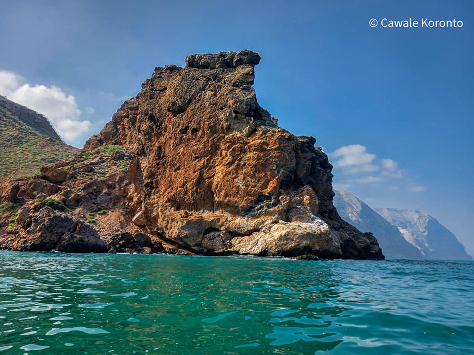
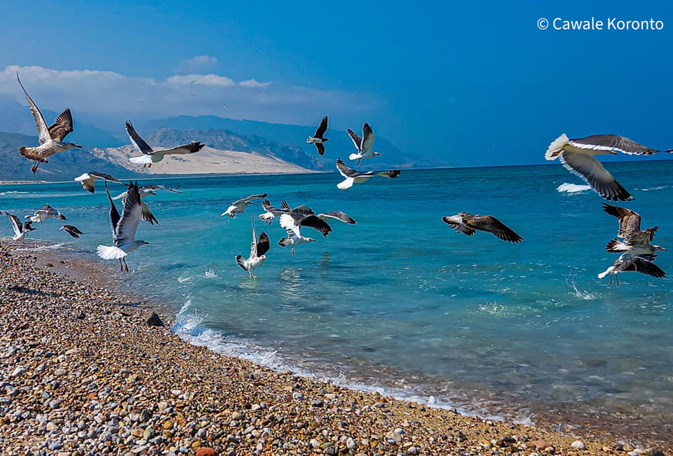
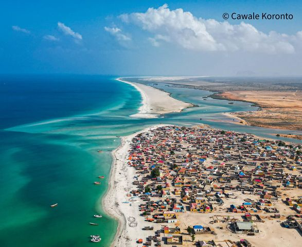
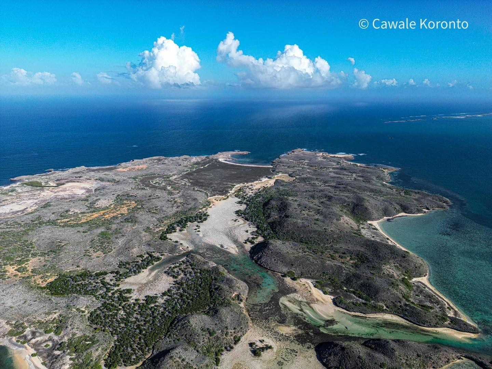
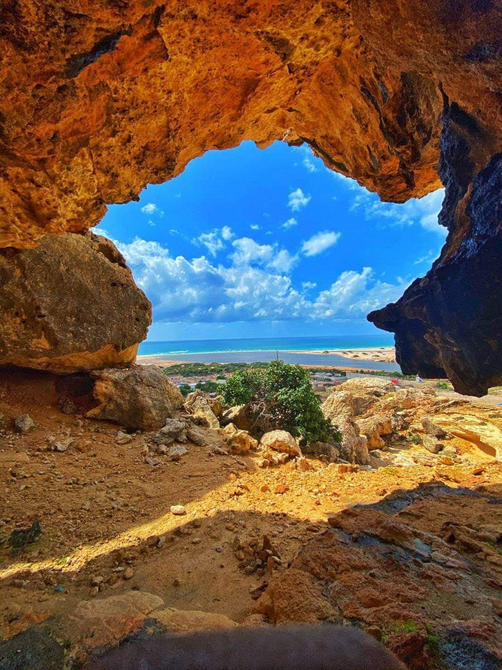
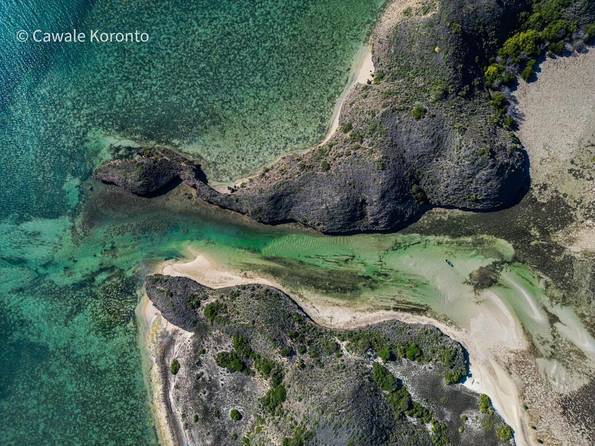

Somali is a Beutifull Countries
Somali is the east africcan Countries taht has longest cost line in africa
we so thrilled to share our backround and information that has been wondred

Hafun (also known as Hafun District or Xaafuun) is a town in the Bari region of Puntland, an autonomous region in northeastern Somalia

Qandala (or Candala) is a town located in the Bari region of Puntland, an autonomous region in northeastern Somalia. Qandala boasts beautiful beaches and scenic mountains.

Gardafuu is a region in the northeastern part of Puntland, an autonomous state in northeastern Somalia. These natural attractions have the potential to be developed and adventure tourism
Let's go and visit somewhere in puntland

Murcanyo is a coastal town located in the Bari region of Puntland, an autonomous region in northeastern Somalia.with its location offering beautiful coastal views and access to the Indian Ocean.

Eyl is a coastal town located in the Nugal region of Puntland, an autonomous region in northeastern Somalia. The natural landscape around Eyl provides opportunities for adventure tourism.

Caluula is a coastal town located in the Bari region of Puntland, an autonomous region in northeastern Somalia. with its location offering beautiful coastal views and access to the Indian Ocean.